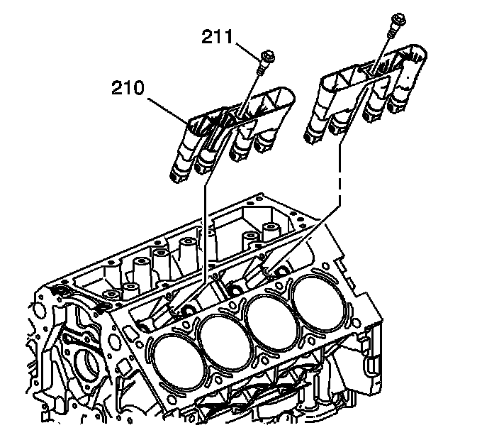

Valve Lifter Replacement (RPO L92 - Second Design)
Valve Lifter Replacement (RPO L92 - Second Design)
Removal Procedure

1. Remove the cylinder head and gasket.
2. Remove the valve lifter guide bolts (211).
3. Remove the valve lifter guides (210) with the lifters. Note the installed position of the guides. The notched area of the guides is to align with the locating tab on the engine block.

4. Remove the valve lifters (209) from the guide (210).
5. Organize or mark the components so that they can be installed in the same location from which they were removed, if required.
6. Clean and inspect the valve lifters, if required.
Installation Procedure
Important: When reusing valve lifters, install the lifters to their original locations.
1. Lubricate the valve lifters (209) and engine block valve lifter bores with clean engine oil.
2. Insert the valve lifters into the lifter guides (210). Align the flat area on the top of the lifter with the flat area in the lifter guide bore. Push the lifter completely into the guide bore.
3. Install the valve lifters and guide (210) to the engine block.
Notice: Refer to Fastener Notice.
4. Install the valve lifter guide bolts.
Tighten the bolt to 12 N.m (106 lb in).
5. Install the cylinder head and gasket.